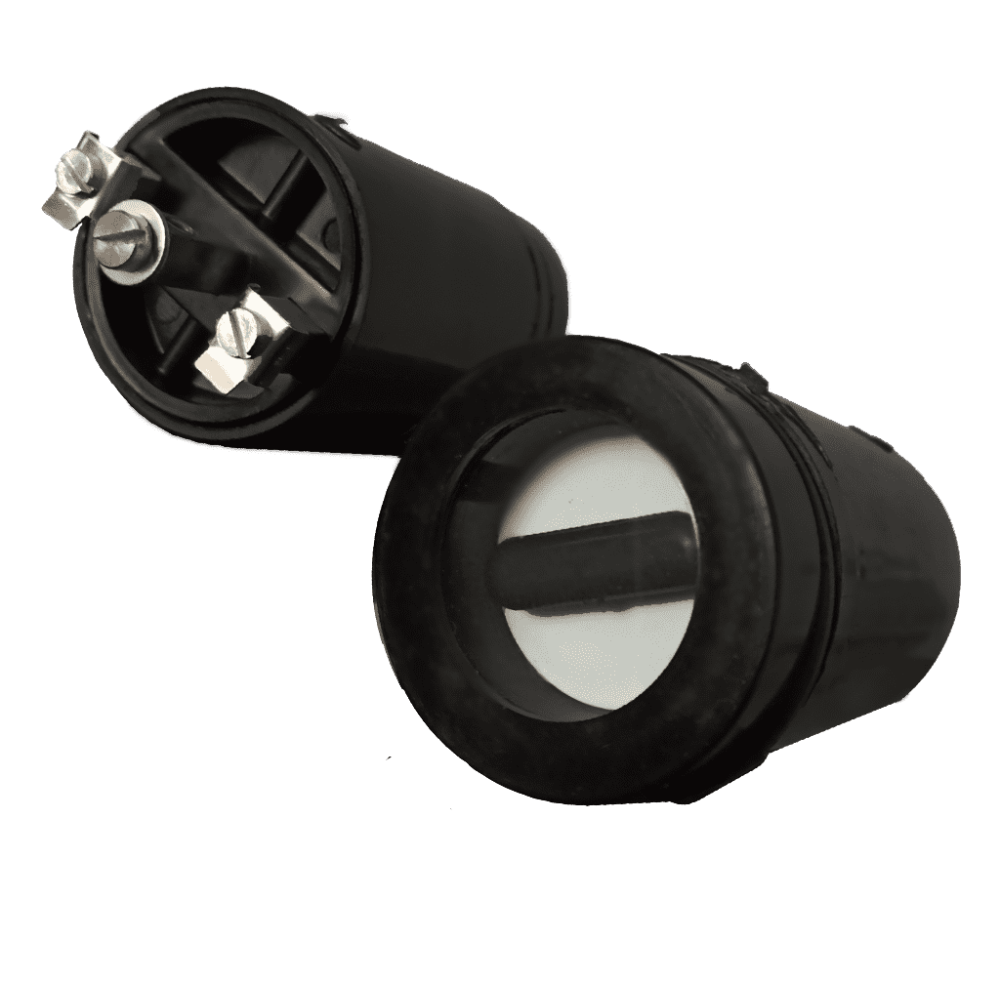

Automatic Semaphor Indicator

Product Description
CRET Automatic Semaphore Indicator when used in Mimic diagram on Control and Instrument Panels ,the pointer takes up position on the supervised equipment and takes right angle position when Isolator, Breaker etc.,is in open position, on failure it takes intermediate position i.e. 45 degree
Unique Features:
- High operating Torque and Positive action.
- Withstands 2.5 K.V. HV Test.
- Coils are continuously rated for 24-30V D.C.
- Very low burden (less than 15 mA)
- Available in round bazel having 36mm,48mm,and 63mm dia.
- Indicator is dust proof.
- Available in High and low burden.
Technical Details
- Operating Voltage ( D.C.) : 60% to 120% of rated voltage
-
Rated Voltage :
- For Low Burden
- 24V / 30V D.C. – No External Resistor
- 110V DC –with 6K Ohms, 6W external resistor
- 220V DC-250V DC –with 16-18K Ohms, 12W external resistor
- For High Burden
- 50V DC – 1K 6W resistor
- 110V DC- 3K 6W resistor
- 220V DC- 9K 12W resistor
- Terminals : 3 Nos: Center Terminal is Common (-ve) Positive is connected to terminal 1 or 2
- Burden : 15 mA (Max) for Low Burden 25 mA(Max) for High Burden
- Bazel Size : 36 mm, 48 mm, & 63 mm dia round Bazel